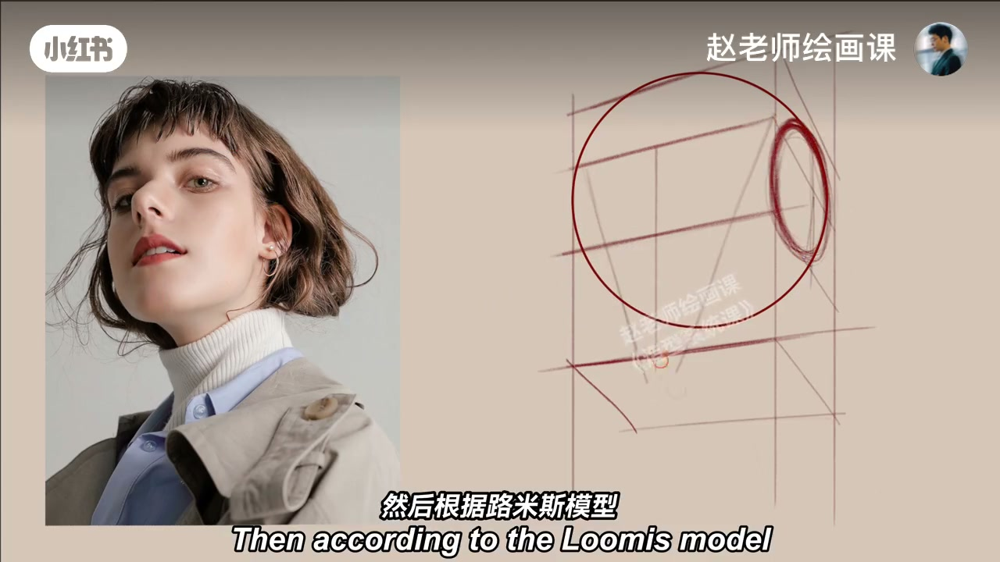
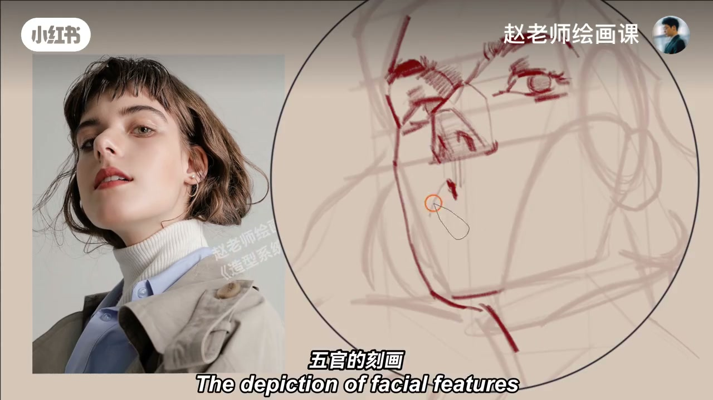
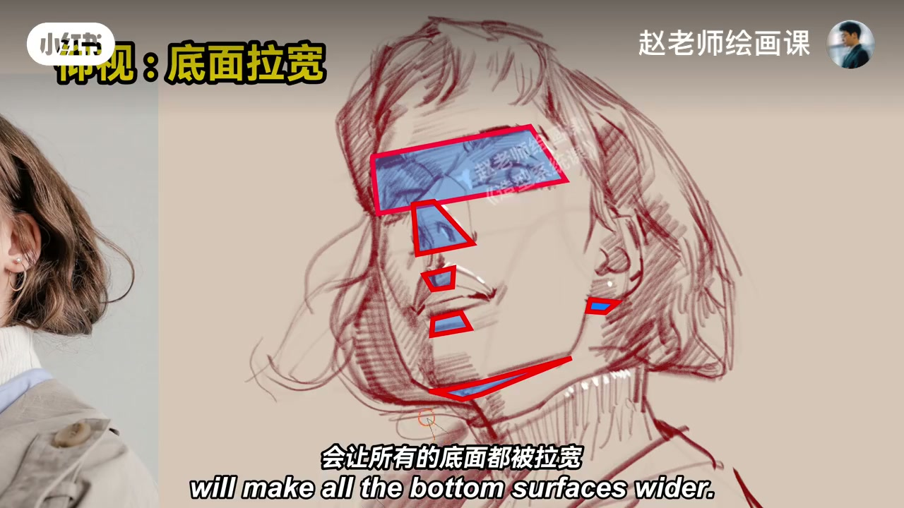
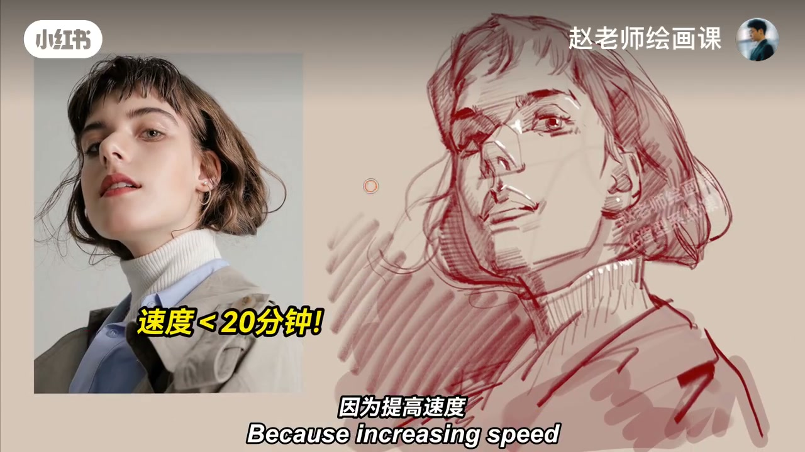

内容要点
挑战大仰视头像速写：根据两点一线快速找到头部所在立方体，再按路米斯模型画头的基本体块和透视；衣领缠绕在脖子上要注意圆的透视；头发其实就是三个基本形状。关键细画环节五官要简练概括——抓好基本形状，再通过明暗交界线画出主要结构转折，并留意形体前后空间。大仰视角度会让所有底面都被拉宽，这个特点画出来就很有透视感。始终概括着画，不要拘泥过小细节；即使和模特不太像也没关系，因为画画画的是关系。速度不要太慢，提速可以避免陷入局部。速写是锻炼造型与感受的最好方法。
知识结构
立方体＋路米斯；领圆透视；概括五官。
底面拉宽；画关系；提速防局部。
仰视不是把五官往上挪：所有底面被拉宽才有透视感；速写靠概括与速度，保关系不保照片级像。
00:00-00:45路米斯体块与概括细画
嗨伙伴们，今天挑战一个大仰视的头像速写。首先根据两点一线，快速找到头部所在的立方体；然后根据路米斯模型，画头的基本体块和透视。衣领是缠绕在脖子上的，要注意圆的透视；头发其实就是三个基本的形状。
关键细画：五官刻画一定要简练概括——抓好基本形状，再通过明暗交界线画出主要的结构转折就可以了；要留意形体之间的前后空间关系。00:12／00:30。


00:45-01:26底面拉宽与速度
大的仰视角度会让所有的底面都被拉宽，这个特点画出来就很有透视感。要始终概括着来画，不要拘泥于过小的细节；即使和模特画得不太像也没有关系，因为画画画的是关系。
速度一定不要太慢，因为提高速度可以让我们避免陷入局部。速写是锻炼造型能力和感受能力的最好方法；在所有大师眼里，画速写就像喝水一样永远不停歇。跟赵老师一起画起来吧。00:48／01:08。


完整转录（17段）
以下文本由 Whisper medium 模型自动转录，可能存在少量识别误差，已尽可能修正。
嗨伙伴们,今天我们来挑战一个大仰式的头像速写
首先,根据两点一线,快速地找到头部所在的立方体
然后,根据路米斯模型,画出头的基本体块和透视
衣领是缠绕在脖子上的,要注意圆的透视
头发其实就是三个基本的形状
来到关键的细画环节,五官的刻画一定要简练概括
具体的说,就是要抓好基本的形状
然后通过明暗交界线,画出主要的结构转折就可以了
要留意形体之间的前后空间关系
大的仰式角度会让所有的底面都被拉宽
这个特点画出来就很有透视感
要始终概括著来画,不要拘泥于过小的细节
即使和模特画的不太像,也没有关系,因为画画画的是关系
速度一定不要太慢,因为提高速度可以让我们避免陷入局部
速写是锻炼我们造型能力和感受能力的最好的方法
在所有的大师眼里,画速写就像喝水一样,永远不停歇
跟赵老师一起画起来吧,拜拜